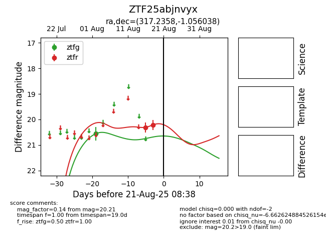

Target ZTF25abjnvyx at 2025-08-21 08:38, see:
FINK: fink-portal.org/ZTF25abjnvyx
Lasair: lasair-ztf.lsst.ac.uk/objects/ZTF25abjnvyx
ALeRCE: alerce.online/object/ZTF25abjnvyx
alt names
ZTF25abjnvyx (ztf,alerce)
coordinates:
equatorial (ra, dec) = (317.2358,-1.05604)
galactic (l, b) = (49.2132,-30.71907)
photometry
last ztfg=20.56, ztfr=20.21
1 ztfg, 2 ztfr detections
